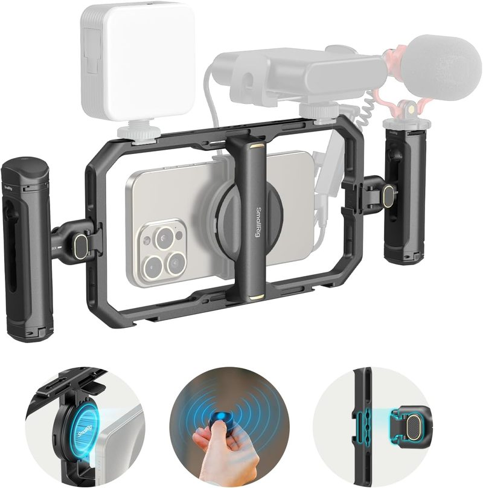
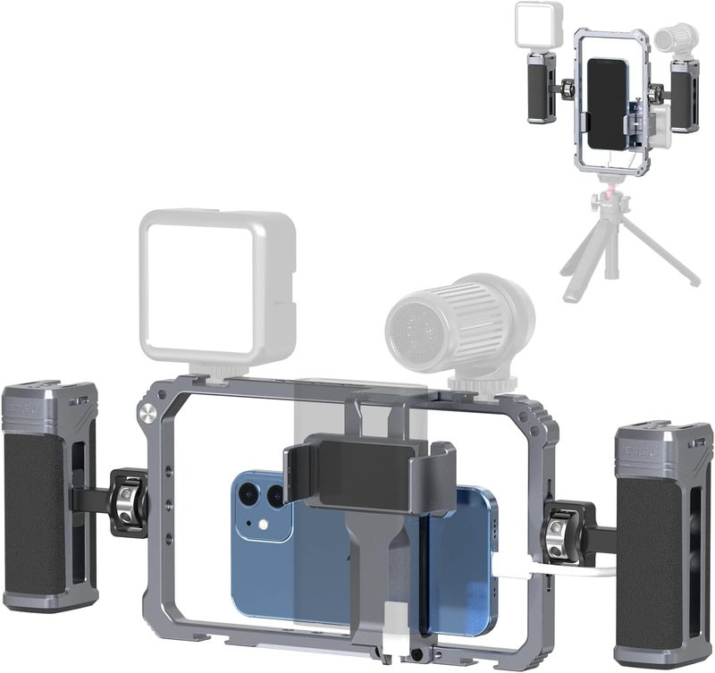
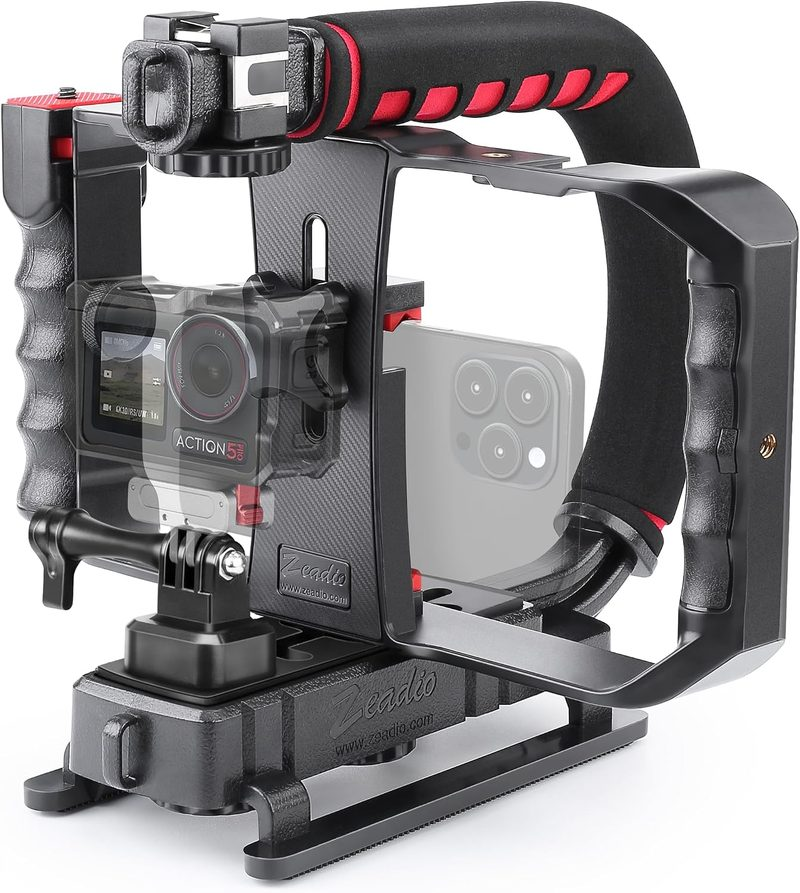

5 Best Universal Video Cages for Samsung & Android Creators (2026)
Buy the SmallRig Universal Phone Cage. First, ignore every MagSafe cage marketed at iPhone owners — your Galaxy or Pixel has no magnet ring, and a magnetic mount without one is a dropped phone waiting to happen. What you want is a clamp that grips by width, and the single spec that decides the purchase is maximum clamp width. SmallRig's 57–90mm range is the one we'd buy without measuring first: it swallows an S25 Ultra with the case still on, where narrower cages leave you prying your phone out of a case before every shoot.
How we pick: published manufacturer specifications and aggregated user reviews — not hands-on testing.

SmallRig Universal Phone Cage
The one to buy if your Android flagship is too wide for iPhone-first cages. Buy it once and grow into it — the spare mounts mean you won't be shopping for a second cage in six months.
- Clamp range
- ~57–90mm
- Mounts
- Cold shoes + 1/4"
- Build
- Aluminum
Why Android Users Need a Different Cage
Most premium iPhone cages rely on MagSafe, the magnetic ring built into iPhones. Samsung, Pixel, and other Android phones don't have that ring, so a MagSafe cage won't hold securely without adding a magnetic case or adapter. The reliable solution for Android is a clamp-style universal cage that grips the phone by its width — the key spec to check is the clamp's minimum and maximum width, since large phones like the Galaxy S25 Ultra need a wide clamp, especially with a case on.
Top Universal Android Cages Compared
| Model | Clamp Type | Fits Phone Width | Mounts | What It Means for You |
|---|---|---|---|---|
| SmallRig Universal Cage | Spring clamp | ~57-90mm | Cold shoes + 1/4" | Widest range here — fits an Ultra-class phone in a case with room to spare |
| Neewer PA009 Rig | Adjustable clamp | ~56-100mm (2.2-4") | Multiple + mic slot | Built-in handles mean one purchase instead of a cage plus a separate grip |
| Ulanzi U-Rig Pro | Spring clip + screw | ~50-89mm (2-3.5") | 3 cold shoes + 2x 1/4" | Most mounting points per dollar if you're stacking a mic, light, and monitor |
| Ulanzi Rig Kit w/ Handles | Spring clamp | ~64-88mm | Dual handles + cold shoes | Two-handed grip steadies walking shots more than a single-handle cage |
| Zeadio Triple Cold-Shoe Grip | Spring clamp | Universal | 3 cold shoes | Skips the cage entirely if you just need a stable handle to mount gear on |
Clamp widths per manufacturer listings and vary by revision. Measure your phone (with case) before buying.
1. SmallRig Universal Phone Cage — Best Overall

SmallRig's reputation from full-size camera cages carries over here. The ~57-90mm clamp range is wide enough for the largest Android flagships with a case on, and the frame's cold shoes and 1/4" threads make it the most expandable option for adding mics, lights, and monitors. It's the safest default recommendation for a Galaxy or Pixel shooter.
👍 Why We Picked It
- ✅ Wide clamp fits large Android phones with a case
- ✅ Trusted build quality from an established brand
- ✅ Plenty of mounting points for expansion
👎 Where It Falls Short
- ❌ Priced above basic no-name clamps
- ❌ Clamp covers side buttons on some phones
2. Neewer PA009 Vlogging Rig — Best With Dual Handles
The Neewer PA009 pairs a wide adjustable clamp (fits ~2.2-4" devices) with dual handles and a wireless mic clip slot, making it a good all-in-one for vloggers who want stability handles built in rather than bought separately. The wide clamp range comfortably handles the biggest Android phones.
👍 Why We Picked It
- ✅ Dual handles included for stability
- ✅ Very wide clamp range
- ✅ Built-in wireless mic clip slot
👎 Where It Falls Short
- ❌ Bulkier than a bare cage
- ❌ Overkill if you don't need handles
3. Ulanzi U-Rig Pro — Best Value
The U-Rig Pro is a long-running favorite for its price-to-features ratio: three cold shoes and two 1/4"-20 threads for a low cost, fitting phones ~2-3.5" wide. The one caveat for Android users is the upper clamp limit — verify a very large phone like the S25 Ultra fits with your case before buying.
👍 Why We Picked It
- ✅ Excellent value for the mounting points offered
- ✅ Three cold shoes for mic + light + monitor
- ✅ Lightweight aluminum build
👎 Where It Falls Short
- ❌ Upper clamp width tight for the biggest phones + cases
- ❌ Single-handle design, less stable than dual-grip rigs
4. Ulanzi Universal Rig Kit with Handles — Best Dual-Grip Kit

If you want the two-handled cage look for an Android phone, this Ulanzi kit delivers dual grips and cold-shoe mounts in one purchase, with a ~64-88mm clamp. It's a good middle ground between a bare cage and the bulkier Neewer vlogging rig.
👍 Why We Picked It
- ✅ Dual handles plus cold-shoe mounts included
- ✅ Supports horizontal and vertical shooting
- ✅ Comfortable silicone grips
👎 Where It Falls Short
- ❌ Narrower max clamp than the SmallRig or Neewer
- ❌ Heavier once both handles are attached
5. Zeadio Triple Cold-Shoe Grip — Best Simple Handheld

If you don't need a full cage and just want a stable handheld grip with somewhere to mount a mic and light, the Zeadio triple cold-shoe handle is a minimalist, affordable option that works with essentially any phone width via its universal clamp.
👍 Why We Picked It
- ✅ Simple, affordable, universal fit
- ✅ Three cold shoes despite compact size
- ✅ Works with action cams and DSLRs too
👎 Where It Falls Short
- ❌ A grip, not a full protective cage
- ❌ Single-hand hold less steady than dual grips